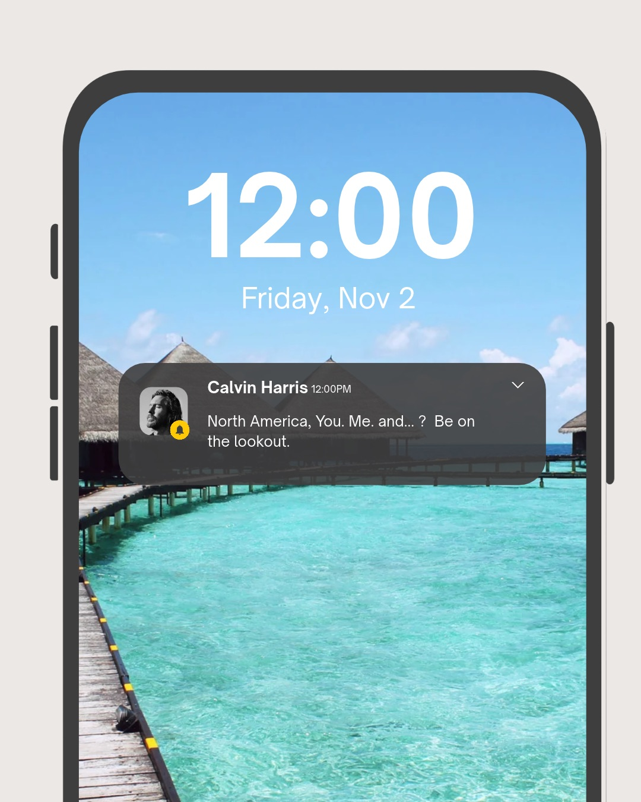

kayleen ramos
journalism and marketing portfolio
about me
I am an undergraduate journalism student in my junior year at the University of Maryland. I am passionate in politics, pop culture, and weaving new and past phenomenons to grasp the attention of different generations and cultures! I am currently a freelancer for La Voz Latina and Her Campus at the University of Maryland.
When I am not writing or studying, you can find me keeping up to date with the news, finding new recipes to try for dinner, playing with my dogs, or thrifting vintage pieces!
mock campaign example
CALVIN HARRIS X NORTH AMERICA TOUR
Calvin Harris is coming to North America for a tour! To further the excitement, I think creating hints for who he might be bring on tour or what songs he might play may strengthen the anticipation and engagement with his fanbase.
Given that he rarely reveals information about his upcoming performances, creating these hints can generate buzz and keep fans engaged. Depending on the state that he is in, the hints can be tailored to specific regions or audiences.
Having local art pieces would encourage fans to write their own names on the pieces which would generate more photos of the piece and advertise the tour further for Harris.

For instance, since he is performing in the DMV area, highlighting a popular local artist he has collaborated, like Pusha T, can create a sense of local connection and further build up the excitement for the concert in an area he has not headlined a solo tour in the North America before, especially in the Washington, D.C. area.
For this specific region, it would be most effective to highlight areas locals might catch on to such as the 32nd Street Farmers Market or Graffiti Alley in Baltimore. Increasing visability while remaining a secret to those who aren't as involved in the community.

Similarly, for other regions, the hints can be adapted to reflect niche locations locally and nuances specific to the country.
For example, Abel, professionally known as The Weeknd, works perfectly for the Toronto venue as he has strong ties to Canada and international support as one of the most popular artists in the world.
Deciding a location would be key to the success of this campaign as it is beyond the U.S. market. Perhaps grabbing onto the Scottish heritage of Harris, honing in on The Caledonian pub and setting shop there or nearby could be effective and a win-win scenario for the pub and Harris.

To incentivize fans, the Harris team could send out a hint letting fans know to be on the "lookout" for who may join him on stage or what songs he might put on the setlist.
There is also the option of creating specific content and merchandise at certain locations of each region to insentivize fans to look for clues. This would be shared through text once again.
For example, at the Toronto location, the team could create exclusive merchandise based around Canadian culture that fans can find by exploring the city's niche spots (e.g., The Caledonian pub x Calvin Harris merch perhaps.)
writing example
In this political piece, I analyze the narrowing allyship between President Donald Trump and four Latin American and Caribbean countries.
I researched the statements, policies, social networks, and public appearances of each leader to understand their perspectives and the impact of Trump's approach on regional dynamics with Latin America and Caribbean countries at large.

resume
- University of Maryland
- Montgomery College
- Damascus High School
education
Journalism Major with prior experience in Psychology
College Park, Maryland
Aug 2024 - Present
3.806 GPA
Freelance Member at La Voz Latina and Her Campus
Social Science and Administrations Major with a Concentration in Psychology
Germantown, Maryland
Aug 2021 - May 2024
3.42 GPA
Psychology Club Member and Minority Scholars Program Member
High School Graduate
Aug 2017 - May 2021
3.44 GPA
Maryland Seal of Biliteracy Award Recipient and Damascus Senior Award Recipient
skills
English (Native Fluent), Spanish (Native Fluent), Canva, Microsoft Office, Google Workspace, AP and MLA Styles, LPC Tracker, Social Media, etc.
awards and certifications
Multi-Ethnic Student Education Academy of Academic Excellency Award Recipient, 2x Deans List Recipient, Social Justice Inclusive Leadership Program Recipient and Maryland Seal of Biliteracy Award Recipient
Currently pursuing certifications on Hubspot and Google
experience
- Personal Assistant, Social Media Manager, Data Entry Specialist, and Payroll Assistant
- Assist with in processing payroll for employees on a bi-weekly basis, ensuring accurate and timely payments
- Manage and organize social media accounts for the company
- Perform research tasks such as gathering data or compiling reports to support decision-making processes for the President of the company
- Organize President's daily schedule to optimize time for maximum productivity and work-life balance
- K-12 Tutor and Officer
- Tutored students in English, Spanish, Science and Math among other individualized subjects
- Communicated effectively with students and parents to manage schedules
- Managed meetings on Zoom
- Discussed academic progress and goals with students and parents
- Elementary School Page Volunteer
- Maintained a cleanly space in library and librarian office
- Prepared matrials for students for upcoming lessons
- Processed student library returns in a timely manner
- Restocked and organized shelves based on indivudalized school systems
LP Construction
Washington DC-Baltimore Area | Hybrid
Jun 2022 - Present
Moco Virtual Tutoring
Montgomery County, Maryland | Remote
Dec 2020 - Dec 2021
Montgomery County Public Schools
Damascus, Maryland |Onsite
Mar 2019 - Dec 2019